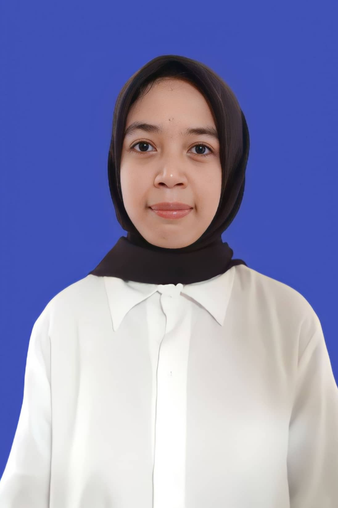

Citra Fikriah Jamal

Summary
I am four semester physics student who is enthusiastic about learning, has an interest in the field of computional physics and data analysis.
Education
- Senior High Scholl, Science Program [SMAN 1 Topoyo, Mamuju Tengah] (2020-2023)
- Bachelor of science in Physics, [Hasanuddin of University] (2023-present)
Academic Experience
- Physisc Laboratory Practicum- [Universitas Hasanuddin]
2023-2024
- Conduted experiment In Physical Fundamental
- Analyzed data and wrote scienctific reports in teams
- Applied basic programming pyhton
Skills
- Microsoft Office⭐️⭐️⭐️⭐️
- Time Management⭐️⭐️⭐️⭐️⭐️
- Problem Solving⭐️⭐️⭐️⭐️
- Teamwork⭐️⭐️⭐️⭐️
Other
© Citra Fikriah Jamal. All rights reserved.